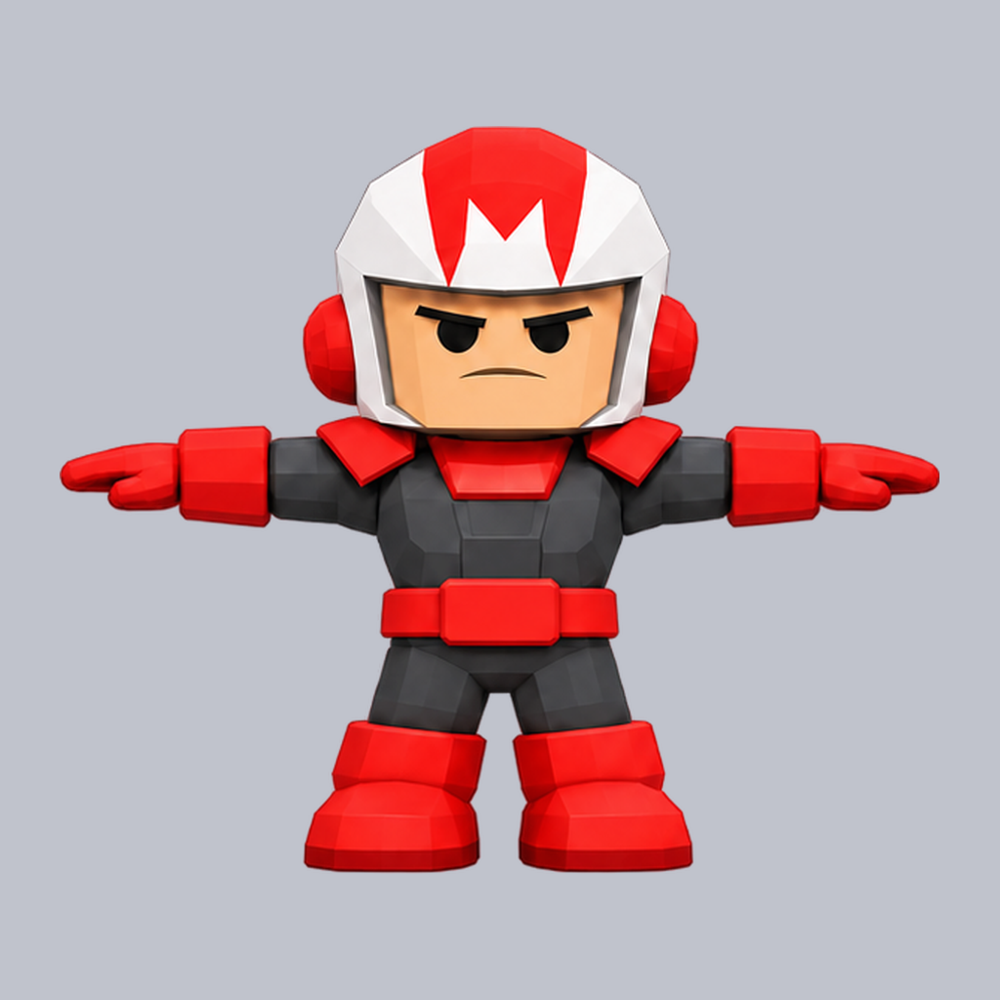
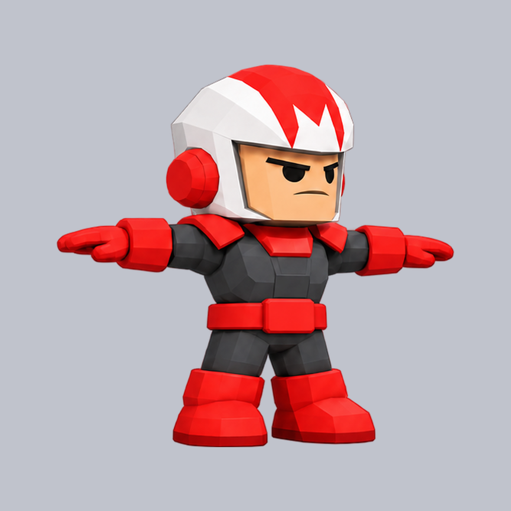
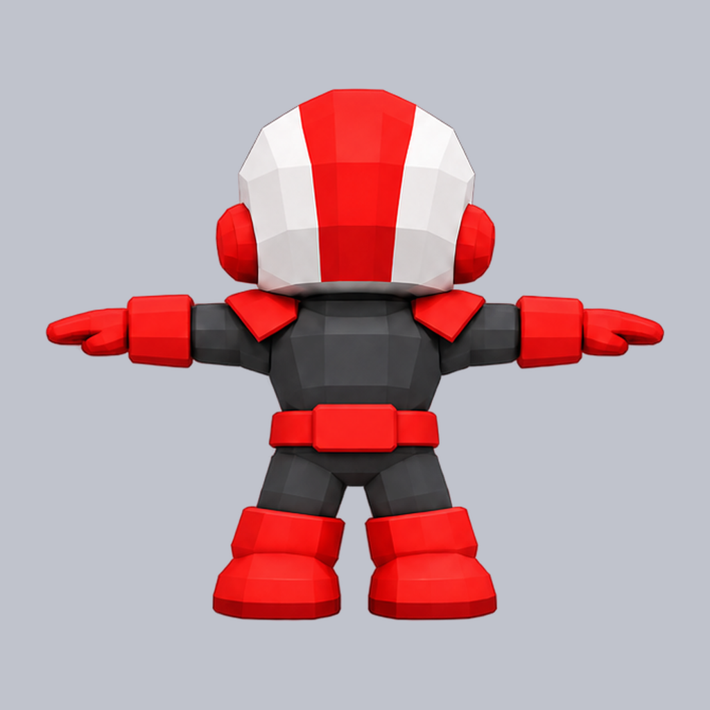
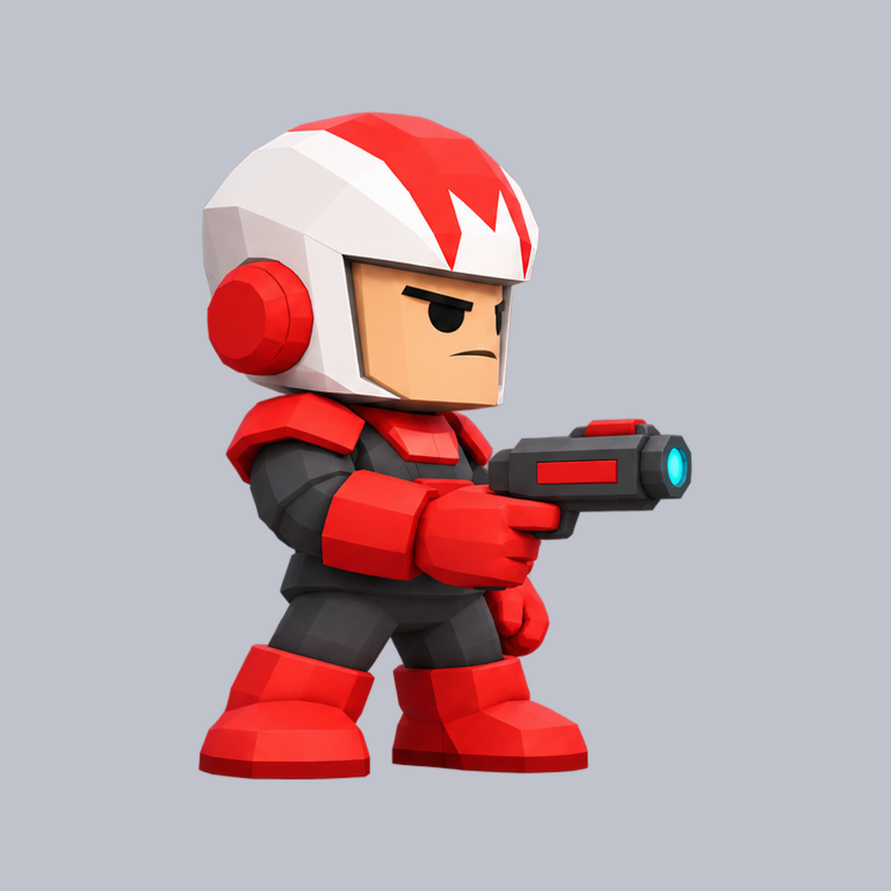
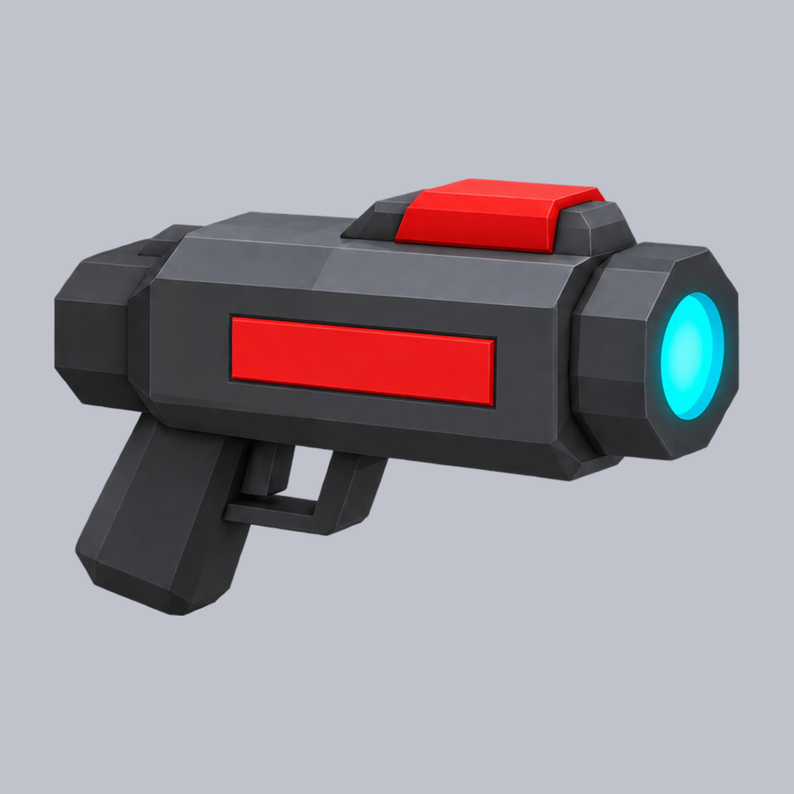
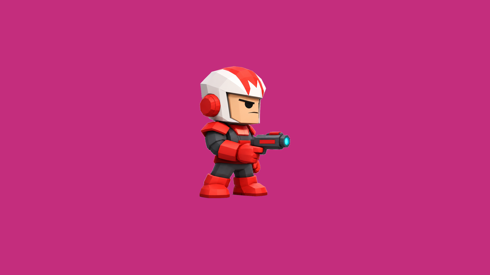

Tres estrategias para que el modelo de video no invente lo que no ve. A: sólo el primer cuadro. B: el primer cuadro más las vistas del personaje y del arma como referencia. C: el personaje sin arma, más las vistas, y el arma pegada después como sprite detrás del puño. En todas, el último cuadro es igual al primero.
Torso: ΔE (CIE76) contra el cuadro 0 alineado, mediana y p95 sobre los cuadros. 'Cambiado' es la fracción del torso con ΔE > 20, o sea, lo que a ojo es otra cosa. 'Colores ajenos' es la fracción del torso con colores que no están en la hoja de vistas. 'Contra la otra toma' es el ΔE entre el torso medio de las dos tomas de la misma estrategia y modelo: si inventan lo mismo, da bajo. 'Movimiento' es cuánto se traslada el torso (px de la pose): un idle quieto da un torso consistente sin mérito. Más bajo es más consistente. Línea de base, con los idles del ranger 2D de hoy (Seedance): ΔE mediano 6–17, cambiado 6–30 %, movimiento 3–22 px.






De perfil, gira un poco hacia cámara a mitad. Re-renderiza el cuadro 0 (pose MAD 45: fondo y colores más claros): el pipeline no puede sacar la escala de la pose.
| cuadro 0 vs pose | 30.43 |
|---|---|
| torso ΔE mediana / p95 | 8.19 / 13.99 |
| torso cambiado mediana / p95 | 7.0% / 24.1% |
| movimiento del torso p95 | 18.6 px de la pose |
| colores ajenos a la hoja | 1.1% (pose 8.8%) |
| contra la otra toma (ΔE torso medio) | 4.5 |

De perfil y estable. El mismo re-render del cuadro 0 (MAD 45).
| cuadro 0 vs pose | 29.98 |
|---|---|
| torso ΔE mediana / p95 | 8.35 / 11.25 |
| torso cambiado mediana / p95 | 7.3% / 16.3% |
| movimiento del torso p95 | 6.2 px de la pose |
| colores ajenos a la hoja | 1.3% (pose 8.3%) |
| contra la otra toma (ΔE torso medio) | 4.5 |

Corta a un primer plano sobre verde agua cerca del cuadro 72 y vuelve (zoom 57 %): no sirve.
| cuadro 0 vs pose | 6.86 |
|---|---|
| torso ΔE mediana / p95 | 11.56 / 49.33 |
| torso cambiado mediana / p95 | 16.7% / 92.3% |
| movimiento del torso p95 | 85.4 px de la pose |
| colores ajenos a la hoja | 0.1% (pose 0.1%) |
| contra la otra toma (ΔE torso medio) | 11.2 |

De perfil, sin cortes, pero dispara un rayo cian que nadie pidió (cuadros 15–45). Deriva 3 %.
| cuadro 0 vs pose | 6.53 |
|---|---|
| torso ΔE mediana / p95 | 11.1 / 17.16 |
| torso cambiado mediana / p95 | 15.2% / 27.7% |
| movimiento del torso p95 | 15.3 px de la pose |
| colores ajenos a la hoja | 0.1% (pose 0.0%) |
| contra la otra toma (ΔE torso medio) | 11.2 |

De perfil todo el clip y el cuadro 0 exacto (pose MAD 1,8). Parpadea.
| cuadro 0 vs pose | 3.8 |
|---|---|
| torso ΔE mediana / p95 | 4.12 / 10.54 |
| torso cambiado mediana / p95 | 2.8% / 16.2% |
| movimiento del torso p95 | 6.2 px de la pose |
| colores ajenos a la hoja | 0.1% (pose 0.1%) |
| contra la otra toma (ΔE torso medio) | 3.2 |

De perfil todo el clip y el cuadro 0 exacto (pose MAD 1,8). La toma más limpia.
| cuadro 0 vs pose | 3.88 |
|---|---|
| torso ΔE mediana / p95 | 4.62 / 14.33 |
| torso cambiado mediana / p95 | 3.1% / 25.2% |
| movimiento del torso p95 | 9.0 px de la pose |
| colores ajenos a la hoja | 0.0% (pose 0.1%) |
| contra la otra toma (ΔE torso medio) | 3.2 |

Abre en el cuadro 0 y corta a otra toma: más cerca, de tres cuartos, sobre el gris de las referencias. Vuelve recién al final.
| cuadro 0 vs pose | 7.88 |
|---|---|
| torso ΔE mediana / p95 | 35.49 / 36.47 |
| torso cambiado mediana / p95 | 61.0% / 62.5% |
| movimiento del torso p95 | 69.0 px de la pose |
| colores ajenos a la hoja | 0.0% (pose 0.2%) |
| contra la otra toma (ΔE torso medio) | 31.2 |

Igual que B1, con primeros planos de la cara y del arma.
| cuadro 0 vs pose | 8.17 |
|---|---|
| torso ΔE mediana / p95 | 41.24 / 45.1 |
| torso cambiado mediana / p95 | 67.3% / 88.2% |
| movimiento del torso p95 | 67.2 px de la pose |
| colores ajenos a la hoja | 0.1% (pose 0.1%) |
| contra la otra toma (ΔE torso medio) | 31.2 |

No corta, pero gira a tres cuartos de frente y apunta a cámara; vuelve al perfil al final.
| cuadro 0 vs pose | 3.95 |
|---|---|
| torso ΔE mediana / p95 | 22.51 / 27.02 |
| torso cambiado mediana / p95 | 40.6% / 47.9% |
| movimiento del torso p95 | 32.1 px de la pose |
| colores ajenos a la hoja | 0.0% (pose 0.1%) |
| contra la otra toma (ΔE torso medio) | 9.5 |

Gira a tres cuartos de frente casi todo el clip, dispara (fogonazo) y cambia de gesto.
| cuadro 0 vs pose | 4.0 |
|---|---|
| torso ΔE mediana / p95 | 16.63 / 25.87 |
| torso cambiado mediana / p95 | 27.0% / 44.2% |
| movimiento del torso p95 | 22.7 px de la pose |
| colores ajenos a la hoja | 0.1% (pose 0.1%) |
| contra la otra toma (ΔE torso medio) | 9.5 |

La misma estrategia B con la pose de tres cuartos leve: se ve más el pecho desde el cuadro 0.
El mismo corte a la toma de las referencias que B.
| cuadro 0 vs pose | 7.7 |
|---|---|
| torso ΔE mediana / p95 | 26.1 / 26.4 |
| torso cambiado mediana / p95 | 46.3% / 47.6% |
| movimiento del torso p95 | 48.6 px de la pose |
| colores ajenos a la hoja | 0.0% (pose 0.2%) |
| contra la otra toma (ΔE torso medio) | 25.3 |

El mismo corte, con primeros planos.
| cuadro 0 vs pose | 7.14 |
|---|---|
| torso ΔE mediana / p95 | 39.63 / 45.77 |
| torso cambiado mediana / p95 | 62.1% / 71.7% |
| movimiento del torso p95 | 91.2 px de la pose |
| colores ajenos a la hoja | 0.0% (pose 0.1%) |
| contra la otra toma (ΔE torso medio) | 25.3 |

Los números del torso son del clip sin arma (la caja del torso no toca el arma).
Corta a otra toma sobre gris y vuelve al final. Sin arma pegada: en la otra toma no hay puño que seguir.
| cuadro 0 vs pose | 7.74 |
|---|---|
| torso ΔE mediana / p95 | 28.91 / 30.16 |
| torso cambiado mediana / p95 | 52.8% / 54.7% |
| movimiento del torso p95 | 20.8 px de la pose |
| colores ajenos a la hoja | 0.0% (pose 0.2%) |
| contra la otra toma (ΔE torso medio) | 8.8 |

Corta a otra toma sobre fondo oscuro, con chispas y corazones. Sin arma pegada.
| cuadro 0 vs pose | 6.86 |
|---|---|
| torso ΔE mediana / p95 | 32.84 / 34.68 |
| torso cambiado mediana / p95 | 60.2% / 63.1% |
| movimiento del torso p95 | 27.8 px de la pose |
| colores ajenos a la hoja | 0.1% (pose 0.2%) |
| contra la otra toma (ΔE torso medio) | 8.8 |

Estira los dos brazos y gira un poco hacia cámara; el arma sigue al puño cuadro a cuadro.
| cuadro 0 vs pose | 3.78 |
|---|---|
| torso ΔE mediana / p95 | 17.71 / 28.48 |
| torso cambiado mediana / p95 | 27.9% / 49.3% |
| movimiento del torso p95 | 23.5 px de la pose |
| colores ajenos a la hoja | 0.1% (pose 0.2%) |
| contra la otra toma (ΔE torso medio) | 18.5 |

Estira el brazo, abre la mano y señala con el índice: el arma pegada queda flotando arriba del dedo. C no sirve con estos clips.
| cuadro 0 vs pose | 3.8 |
|---|---|
| torso ΔE mediana / p95 | 26.78 / 29.69 |
| torso cambiado mediana / p95 | 42.7% / 49.8% |
| movimiento del torso p95 | 12.9 px de la pose |
| colores ajenos a la hoja | 0.1% (pose 0.0%) |
| contra la otra toma (ΔE torso medio) | 18.5 |

Desde la pose de zancada con el casco a la misma escala que el idle. Kling dispara rayos aunque nadie se lo pida: los videos de acá ya están sin rayos (sacar_rayos.py). Referencia sin invento: el correr de la vía 3D da ΔE 15,1 y 21 % cambiado con 25 px de movimiento (characters/lowpoly/3d/).
Zancada de perfil y estable, loop de 48 cuadros (costura 0,26). El modelo dispara rayos en 106 de 121 cuadros; sacar_rayos.py los borra sin tocar la boca del arma (remove_flash se llevaba la tapa y el disco cian). Números del torso: del clip original.
| cuadro 0 vs pose | 4.27 |
|---|---|
| torso ΔE mediana / p95 | 16.76 / 23.88 |
| torso cambiado mediana / p95 | 27.3% / 43.5% |
| movimiento del torso p95 | 46.7 px de la pose |
| colores ajenos a la hoja | 0.1% (pose 0.1%) |
| contra la otra toma (ΔE torso medio) | 8.5 |

Igual de estable, loop de 28 cuadros (costura 0,29). Dispara en 73 de 121 cuadros; sin rayos queda el arma entera. La mejor.
| cuadro 0 vs pose | 4.19 |
|---|---|
| torso ΔE mediana / p95 | 15.34 / 18.23 |
| torso cambiado mediana / p95 | 24.8% / 31.5% |
| movimiento del torso p95 | 38.2 px de la pose |
| colores ajenos a la hoja | 0.1% (pose 0.0%) |
| contra la otra toma (ΔE torso medio) | 8.5 |